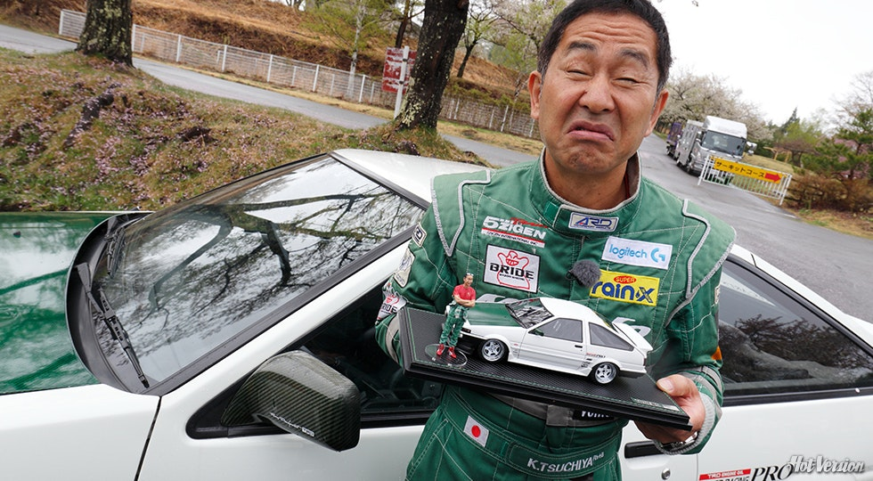
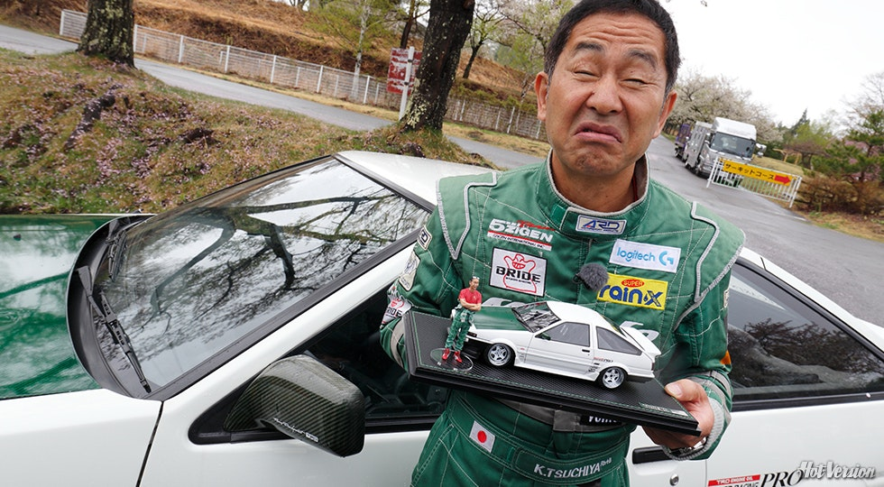

Pilota professionista, ha preso parte alle più svariate competizioni automobilistiche tra cui le famose 24 ore di Le Mans dal 1994 al 2000 ottenendo come miglior piazzamento la seconda posizione (1999), NASCAR, intraprendendo una carriera anche nel drifting. In merito alle notevoli capacità in quest'ultimo campo, in particolare per la sua maniera non del tutto convenzionale di driftare in eventi non competitivi, gli è stato attribuito il soprannome di "Dorifto o Dori ", cioè "Re del Drift".
Tsuchiya ha iniziato la sua carriera nella serie Fuji Freshman nel 1977. A differenza dei numerosi piloti che provenivano da famiglie benestanti o figli di campioni automobilistici, ha affinato le sue abilità grazie allo street racing ed è divenuto una leggenda urbana.
 
Torna alla home

Torna alla home